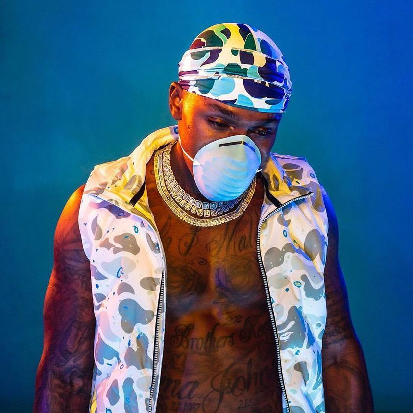
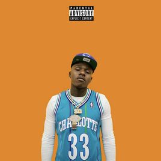

Click for Spotify Link
Profile
Name: Jonathan Lyndale Kirk
Rapper Name: Dababy (AKA Baby Jesus)
Age: 28
Genre: Hip-Hop
Rapper Name: Dababy (AKA Baby Jesus)
Age: 28
Genre: Hip-Hop
Popular Hits
Dababy - Rockstar (ft. Roddy Ricch)
Dababy - BOP
Dababy - Suge
Personal Favorites

Dababy - Blame It On Baby (2020)
Dababy - Call It Even (2020)

Dababy - 21 (2018)
About
Jonathan Lyndale Kirk (born December 22, 1991), better known as DaBaby (formerly known as Baby Jesus), is an American rapper, singer, and songwriter from Charlotte, North Carolina. After releasing several mixtapes between 2014 and 2018, DaBaby rose to mainstream prominence in 2019.
His debut studio album Baby on Baby (2019) peaked at number seven on the Billboard 200, while his second studio album, Kirk (2019), debuted at number one. The albums produced the Billboard Hot 100 hit singles "Suge", "Intro", and "Bop". His third studio album, Blame It on Baby (2020), became his second consecutive number-one album in the US. It also produced DaBaby's highest-charting song, "Rockstar" featuring Roddy Ricch, which spent seven non-consecutive weeks at number one on the Billboard Hot 100.